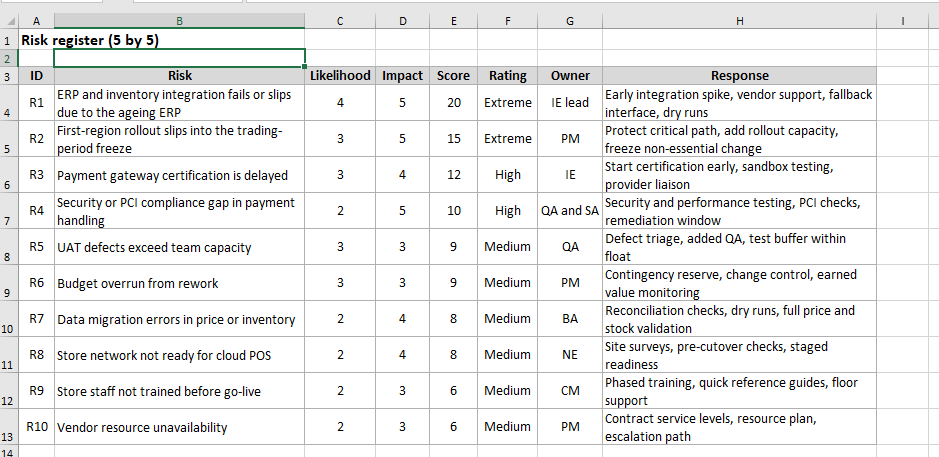
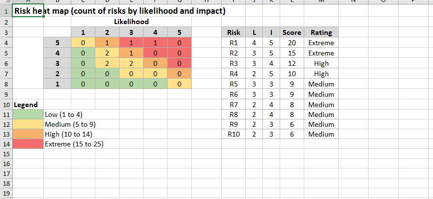

Section 5 of 9
Risk Management
Section owner: Subodh Lamichhame
This section shows how risks are scored and how they are prioritised.
Risk register and scoring

Image slot: images/xl_risk_register.pngRisk heat map

Image slot: images/xl_risk_heatmap.pngTwo risks are Extreme. The ageing ERP integration, with a score of 20, is the most serious, because a failure there delays testing and go-live; it is managed with an early integration spike, vendor support and a fallback interface. The rollout slipping into the trading freeze, with a score of 15, is next, managed by protecting the critical path, adding rollout capacity and freezing non-essential change. A payment certification delay and a security or PCI gap are High risks, addressed by starting certification early and running dedicated security testing.